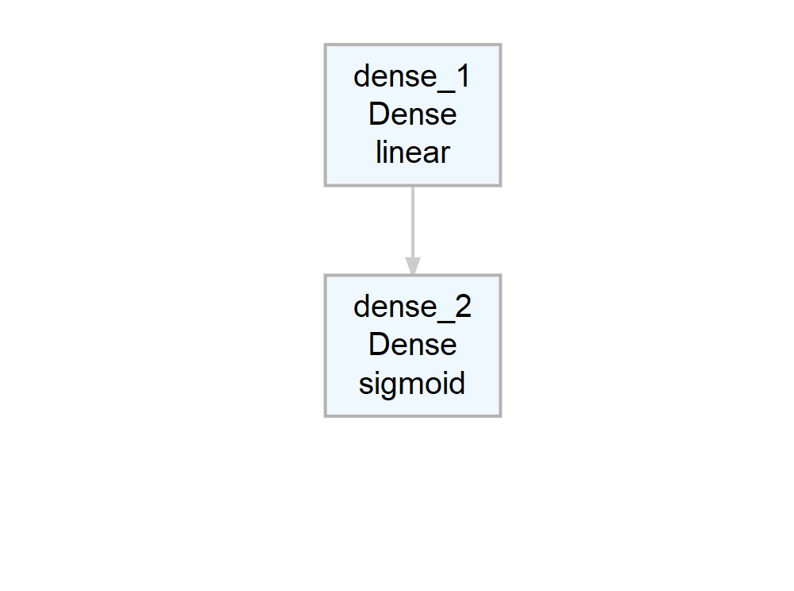
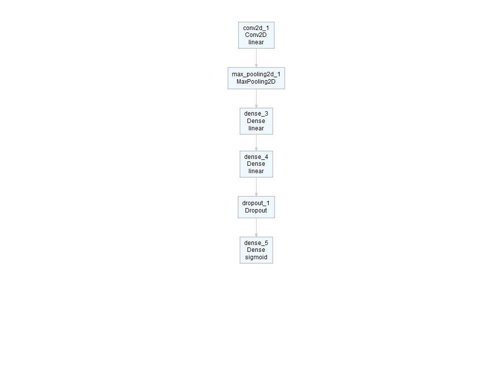
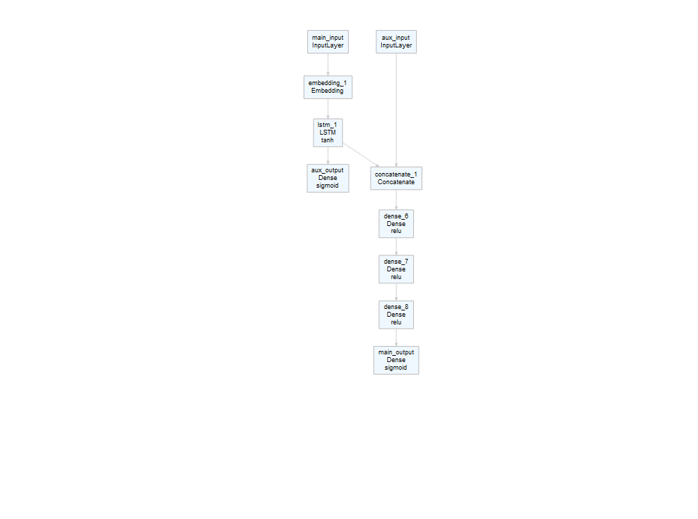

The goal of deepviz is to visualize (simple) neural network architectures.
plot_model() with sequential models
Create a model
model <- keras_model_sequential() %>%
layer_dense(10, input_shape = 4) %>%
layer_dense(2, activation = "sigmoid")Plot the model

Add some more layers and plot
model <- keras_model_sequential() %>%
layer_conv_2d(filters = 16, kernel_size = c(3, 3)) %>%
layer_max_pooling_2d() %>%
layer_dense(10, input_shape = 4) %>%
layer_dense(10, input_shape = 4) %>%
layer_dropout(0.25) %>%
layer_dense(2, activation = "sigmoid")
model %>% plot_model()
plot_model() with network models
Construct a network model using the keras function API, using the example from https://keras.rstudio.com/articles/functional_api.html
model <- local({
main_input <- layer_input(shape = c(100), dtype = 'int32', name = 'main_input')
lstm_out <- main_input %>%
layer_embedding(input_dim = 10000, output_dim = 512, input_length = 100) %>%
layer_lstm(units = 32)
auxiliary_output <- lstm_out %>%
layer_dense(units = 1, activation = 'sigmoid', name = 'aux_output')
auxiliary_input <- layer_input(shape = c(5), name = 'aux_input')
main_output <- layer_concatenate(c(lstm_out, auxiliary_input)) %>%
layer_dense(units = 64, activation = 'relu') %>%
layer_dense(units = 64, activation = 'relu') %>%
layer_dense(units = 64, activation = 'relu') %>%
layer_dense(units = 1, activation = 'sigmoid', name = 'main_output')
keras_model(
inputs = c(main_input, auxiliary_input),
outputs = c(main_output, auxiliary_output)
)
})
model
#> Model
#> ___________________________________________________________________________
#> Layer (type) Output Shape Param # Connected to
#> ===========================================================================
#> main_input (InputLayer) (None, 100) 0
#> ___________________________________________________________________________
#> embedding_1 (Embedding) (None, 100, 512) 5120000 main_input[0][0]
#> ___________________________________________________________________________
#> lstm_1 (LSTM) (None, 32) 69760 embedding_1[0][0]
#> ___________________________________________________________________________
#> aux_input (InputLayer) (None, 5) 0
#> ___________________________________________________________________________
#> concatenate_1 (Concaten (None, 37) 0 lstm_1[0][0]
#> aux_input[0][0]
#> ___________________________________________________________________________
#> dense_6 (Dense) (None, 64) 2432 concatenate_1[0][0]
#> ___________________________________________________________________________
#> dense_7 (Dense) (None, 64) 4160 dense_6[0][0]
#> ___________________________________________________________________________
#> dense_8 (Dense) (None, 64) 4160 dense_7[0][0]
#> ___________________________________________________________________________
#> main_output (Dense) (None, 1) 65 dense_8[0][0]
#> ___________________________________________________________________________
#> aux_output (Dense) (None, 1) 33 lstm_1[0][0]
#> ===========================================================================
#> Total params: 5,200,610
#> Trainable params: 5,200,610
#> Non-trainable params: 0
#> ___________________________________________________________________________Plot the model
